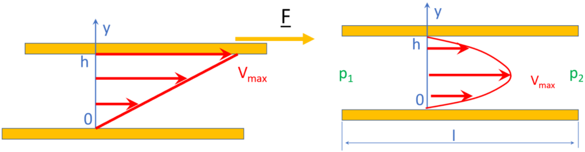
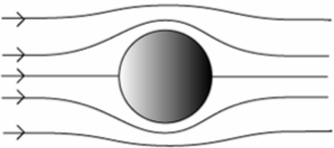
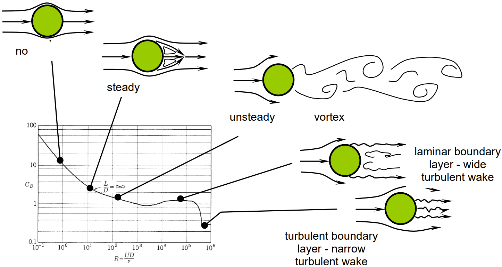

Reynolds number
Contents
Reynolds number#
Couette and Poiseuille flows#
There are two fundamental planar laminar flows called the Couette and the Poiseuille flows, represented in the Figure 1 below. In the Couette flow, to the left, the upper plate (in yellow) is displaced with the velocity \(V_{max}\) with respect to the lower plate. The velocity profile is linear in the fluid flowing between the two plates, with a zero velocity at the contact of the lower plate and a maximum velocity at the top plate. The flow is driven by the relative velocity of the two bounding plates. For the Poiseuille flow, Figure above to the right, the two bounding plates are at rest. The flow is driven by the difference in pressure between the entrance and the exit separated by the distance \(l\). The velocity profile in the fluid is parabolic with a zero velocity at the contact of the two bounding plates and a maximum at the centre. These two flows have many applications in the Earth Sciences and in Engineering.

Figure 1: Couette (left) and Poiseuille (right) flows
Viscosity#
The velocity profile is linear in the Couette flow and the velocity gradient along the y-axis is \(\frac{V_{max}}{h}\) in which h is the distance separating the two plates. This gradient, which has dimension \([T^{-1}]\) is called the strain rate. The force F applied to the upper plate to drive the flow is parallel to the plate. Its magnitude F divided by the area of the plate \(\frac{F}{A}\) has the same dimension as a pressure and is called the shear stress.
It is found, for many fluids, that there is a linear relation between the shear stress and the strain rate:
in which the constant \(\eta\) is called the viscosity. This material property has the unit of \(Pa\,s\). If the viscosity is a constant and thus not sensitive to the temperature and the strain rate, the fluid is said to be Newtonian.
Reynolds number and drag coefficient#
Many important problems in Earth Sciences involve particles moving through fluids – for example a rain drop falling through air, a sand grain settling through water, a bubble of gas rising through a lava sheet, a particle of iron sinking through the outer core, a feldspar crystal floating to the top of a magma chamber, a meteorite entering a planetary atmosphere, or even the whole lithosphere sinking into the mantle during subduction.
Here, we will consider the drag force \(F\) on a spherical particle of diameter \(d\) that is moving with a velocity \(v\) relative to a fluid with viscosity \(\eta\) and density \(\rho_{f}\). Note that it does not matter whether the particle is moving through the fluid, or whether the fluid is flowing past the particle. Nor does it matter whether the flow is vertical or horizontal, or in any other direction. All that matters is that we have relative motion between the fluid and the particle.
Dimensional analysis tells us that we should be able to describe this problem fully using just two independent dimensionless parameters because there are five independent variables in the problem (\(F\), \(d\), \(v\), \(\eta\) and \(\rho_{f}\)) and these involve just three independent dimensions (mass, length and time). So only \(5 – 3 = 2\) independent dimensionless parameters are required to describe the system.
We can make two independent dimensionless quantities that between them involve all the variables in the problem:
Reynolds number:
\begin{equation} Re = \frac{\rho_{f}vd}{\eta} \end{equation}
Drag coefficient:
\begin{equation} C_{D} = \frac{2F}{\rho_{f}v^{2}A} \end{equation}
For historical reasons, the drag coefficient \(C_{D}\) is defined including a factor of 2 and using the cross-sectional area \(A\) of the particle rather than the diameter \(d\), where of course \(A \sim d^{2}\). Drag coefficient and Reynolds number play a central role in the analysis of sediment transport by water and wind.
Since this problem involves just two dimensionless variables, one of them can always be written as a function of the other, for example:
Or equivalently, if we replace \(C_{D}\) by the original variables, then the drag force \(F\) is given by:
All that remains is to discover the form of the function \(f\). This is most easily done by experiment.
Stokes’ Law#
Experiments show that for low Reynolds numbers (\(Re\) < ~1), the relationship between \(C_{D}\) and \(Re\) for spherical particles is simply
In terms of the original variables, this gives
where \(d\) is the diameter and \(r\) is the radius of the particle. This important relationship is called Stokes’ Law. Stokes’ law is valid only for low Reynolds numbers, that is for small particles moving slowly through high-viscosity fluids.
If the particles are not spheres, then the constant that relates \(C_{D}\) and \(Re\) will not be exactly equal to 24, but the same principles will apply.
Stokes flow#
The fluid flow associated with Stokes’ law, called Stokes flow, is laminar, smooth and steady so that, for an observer moving with the particle, successive situations will appear identical.

In Stokes flow, the drag depends upon \(v\) (rather than \(v^{2}\) which is the case at higher velocities), and on \(d\) (rather than on the cross-sectional area which is \(\sim d^{2}\)). Note also that formulae may be written in terms of either the diameter \(d\) or the radius \(r\).
Particle settling#
In the earth sciences, Stokes’ law typically applies to fine sedimentary particles falling through water, to crystals rising or settling through molten rock, and to very fine particles falling through air.
When a sand or silt grain falls through the ocean, the drag force is balanced by the net gravitational force on the grain, and the particle falls with a constant or terminal velocity. The net gravitational force \(F_{g,net}\) (i.e. the gravitational force minus the buoyancy force) is
Where \(m_{s}\) is the mass of the solid grain, \(m_{f}\) is the mass of the same volume of fluid water, \(\rho'\) is the reduced density of the grain (the difference between the density of the grain and the fluid), and \(r = d / 2\) is the radius of the grain.
Combining this with Stokes’ law gives an expression for the velocity \(v\) at which the grain falls:
Turbulent flow#
As the Reynolds number increases, the flow of fluid around the particle becomes no longer laminar, rather it becomes turbulent – it contains eddies, and it is time-varying, complicated and possibly chaotic.
For large Reynolds numbers, the relationship between \(C_{D}\) and \(Re\) changes. At Reynolds numbers in the range \(\sim 10^{2} < Re <\,\sim10^{5}\), the drag coefficient is approximately constant and is independent of \(Re\). Under these circumstances, \(C_{D} \approx 0.5\) for spheres, \(C_{D} \approx 0.1\) for highly aerodynamic shapes, and \(C_{D} \approx 1\) for blunt shapes.
In this case, for spheres, the drag force \(F_{d}\) becomes:
In this new case the drag force does not depend on the viscosity, and it varies with the square of the velocity v and the square of the particle radius \(r\).
If we now consider a particle settling under gravity, then we can combine \(F_{g,net}\) with \(F_{d}\) to obtain a new expression for the terminal velocity \(v\).
In Stokes flow the terminal velocity varied as \(d^{2}\) whereas for higher Reynolds numbers it varies only as \(\sqrt{d}\).
# import relevant modules
%matplotlib inline
import numpy as np
import matplotlib.pyplot as plt
# create our own functions
# This code is adapted from https://folk.ntnu.no/leifh/teaching/tkt4140/._main012.html
from numpy import logspace, zeros
# Define the function cd_sphere
def cd_sphere(Re):
# This function computes the drag coefficient (CD) of a sphere as a function of the Reynolds number Re.
# Curve fitted after fig . A -56 in Evett and Liu: "Fluid Mechanics and Hydraulics"
from numpy import log10, array, polyval
if Re <= 0.0:
CD = 0.0
elif Re > 8.0e6:
CD = 0.2
elif Re > 0.0 and Re <= 0.5:
CD = 24.0/Re
elif Re > 0.5 and Re <= 100.0:
p = array([4.22, -14.05, 34.87, 0.658])
CD = polyval(p, 1.0/Re)
elif Re > 100.0 and Re <= 1.0e4:
p = array([-30.41, 43.72, -17.08, 2.41])
CD = polyval(p, 1.0/log10(Re))
elif Re > 1.0e4 and Re <= 3.35e5:
p = array([-0.1584, 2.031, -8.472, 11.932])
CD = polyval(p, log10(Re))
elif Re > 3.35e5 and Re <= 5.0e5:
x1 = log10(Re/4.5e5)
CD = 91.08*x1**4 + 0.0764
else:
p = array([-0.06338, 1.1905, -7.332, 14.93])
CD = polyval(p, log10(Re))
return CD
# Calculate real drag coefficient
Npts = 500
Re = logspace(-1, 7, Npts, True, 10)
CD = zeros(Npts)
i_list = list(range(0, Npts-1))
for i in i_list:
CD[i] = cd_sphere(Re[i])
# calculate drag coefficient from Stoke's law
Re_Stoke = np.linspace(0.1, 10000, 100)
CD_Stoke = 24/Re_Stoke
# Make plot
plt.figure(figsize=(8,6))
plt.plot(Re_Stoke, CD_Stoke, '-r', label="Stoke's law") # plot CD vs Re by Stoke's law
plt.plot(Re, CD, '-b', label="Real") # plot real CD vs Re
plt.yscale('log')
plt.xscale('log')
plt.xlabel('$Re$')
plt.ylabel('$C_D$')
plt.grid('on', 'both', 'both')
plt.title('Variation of drag coefficient ($C_D$) with Reynolds number ($Re$) for spherical particles', fontsize=14)
plt.legend(loc='best', fontsize=10)
<matplotlib.legend.Legend at 0x18bf98f43a0>
Reynolds number for general flows#
The concept of Reynolds number can be applied to any type of fluid flow, for example the flow of a river within a channel, the atmosphere around a volcano, or blood within capillaries. In each case, the Reynolds number is defined using some scale length that is characteristic of the problem rather than a simple particle diameter. That is, if \(l\) is the scale length, then
The Reynolds number in such flows controls the importance and type of turbulence, and influences the pattern of the flow. Flows that have a similar geometries and a similar Reynolds numbers will tend to have similar types of flow. In many flows, different scale lengths, and hence different Reynolds numbers, will characterise different parts of the flow.
During flow parallel to a boundary, one of the appropriate scale lengths is often the distance along the flow. Such flows tend to start out as laminar and then become turbulent down-flow as the Reynolds number increases.

References#
Lecture note for Lecture 5 of the Physical Processes module